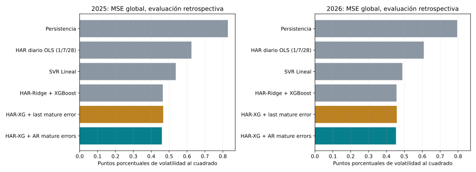
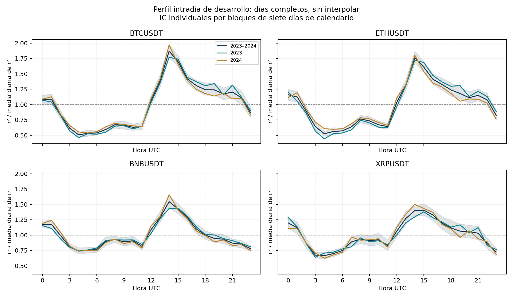

18 de octubre de 2026 · resultados locales
Mismo objetivo y fechas por modelo:358 orígenes2025 y236 en2026 (1 de enero–24 de agosto). Cada origen aporta una pérdida media sobre112 salidas dependientes. RMSE macro es promedio de RMSE por activo/ventana/horizonte; no equivale a raíz del MSE global.

| model | mse | rmse | mae | r2 | year |
|---|---|---|---|---|---|
| HAR-Ridge + XGBoost residual | 0.429903 | 0.565053 | 0.326757 | 0.753991 | 2026 |
| HAR-XG Ridge ponderado | 0.433135 | 0.565714 | 0.325657 | 0.753466 | 2026 |
| HAR-XG + AR mature errors | 0.453054 | 0.577919 | 0.339675 | 0.742281 | 2026 |
| HAR-Ridge + XGBoost | 0.456042 | 0.579586 | 0.344786 | 0.740759 | 2026 |
| HAR-XG + AR no online labels | 0.456798 | 0.580002 | 0.341018 | 0.740544 | 2026 |
| HAR-XG + last mature error | 0.45762 | 0.580652 | 0.344077 | 0.739852 | 2026 |
| Random Forest | 0.467501 | 0.593166 | 0.361041 | 0.729935 | 2026 |
| XGBoost | 0.472173 | 0.590617 | 0.346887 | 0.727725 | 2026 |
| Lasso | 0.485804 | 0.594738 | 0.364431 | 0.726632 | 2026 |
| SVR Lineal | 0.48881 | 0.597642 | 0.362523 | 0.723865 | 2026 |
| Ridge | 0.488895 | 0.597434 | 0.360731 | 0.724349 | 2026 |
| k-NN | 0.513275 | 0.617527 | 0.361078 | 0.705845 | 2026 |
| HAR diario OLS (1/7/28) | 0.608566 | 0.687442 | 0.444517 | 0.647269 | 2026 |
| HAR simple OLS (1/7/28) | 0.696309 | 0.793412 | 0.554 | 0.562031 | 2026 |
| HAR simple Ridge (1/7/28) | 0.76871 | 0.828742 | 0.601612 | 0.5294 | 2026 |
| Persistencia | 0.795143 | 0.767783 | 0.434525 | 0.545999 | 2026 |
| reference | mse_candidate | mse_reference | reduction_percent | dm | p | p_holm | favorable_significant |
|---|---|---|---|---|---|---|---|
| HAR-Ridge + XGBoost | 0.453054 | 0.456042 | 0.655055 | -1.02151 | 0.308065 | 0.585139 | False |
| HAR-XG + last mature error | 0.453054 | 0.45762 | 0.997777 | -1.12066 | 0.263578 | 0.585139 | False |
| HAR-XG Ridge ponderado | 0.453054 | 0.433135 | -4.59885 | 1.4576 | 0.146285 | 0.585139 | False |
| HAR-Ridge + XGBoost residual | 0.453054 | 0.429903 | -5.38518 | 1.36893 | 0.172328 | 0.585139 | False |
| model | mse | rmse | mae | r2 | year |
|---|---|---|---|---|---|
| HAR-XG Ridge ponderado | 0.45281 | 0.547024 | 0.362899 | 0.747719 | 2025 |
| HAR-Ridge + XGBoost residual | 0.456044 | 0.549711 | 0.365038 | 0.745722 | 2025 |
| HAR-XG + AR mature errors | 0.459498 | 0.555414 | 0.370904 | 0.740544 | 2025 |
| HAR-XG + AR no online labels | 0.464227 | 0.557765 | 0.372727 | 0.73864 | 2025 |
| HAR-Ridge + XGBoost | 0.464681 | 0.558168 | 0.375569 | 0.737997 | 2025 |
| HAR-XG + last mature error | 0.466855 | 0.56027 | 0.377344 | 0.737012 | 2025 |
| XGBoost | 0.496539 | 0.579765 | 0.38864 | 0.715478 | 2025 |
| k-NN | 0.520606 | 0.593681 | 0.396859 | 0.703942 | 2025 |
| Random Forest | 0.52457 | 0.602525 | 0.417017 | 0.697064 | 2025 |
| Ridge | 0.537024 | 0.597105 | 0.41381 | 0.702098 | 2025 |
| SVR Lineal | 0.537172 | 0.598079 | 0.414032 | 0.700735 | 2025 |
| Lasso | 0.563582 | 0.606632 | 0.42124 | 0.690155 | 2025 |
| HAR diario OLS (1/7/28) | 0.624747 | 0.671408 | 0.459408 | 0.635159 | 2025 |
| Persistencia | 0.828196 | 0.7477 | 0.497194 | 0.537732 | 2025 |
| HAR simple OLS (1/7/28) | 0.908028 | 0.867236 | 0.627232 | 0.433625 | 2025 |
| HAR simple Ridge (1/7/28) | 0.931407 | 0.880433 | 0.628765 | 0.421691 | 2025 |
| reference | mse_candidate | mse_reference | reduction_percent | dm | p | p_holm | favorable_significant |
|---|---|---|---|---|---|---|---|
| HAR-Ridge + XGBoost | 0.459498 | 0.464681 | 1.11531 | -2.6218 | 0.00912088 | 0.0273626 | True |
| HAR-XG + last mature error | 0.459498 | 0.466855 | 1.57572 | -2.94063 | 0.00348895 | 0.0139558 | True |
| HAR-XG Ridge ponderado | 0.459498 | 0.45281 | -1.47703 | 0.897192 | 0.370221 | 0.740442 | False |
| HAR-Ridge + XGBoost residual | 0.459498 | 0.456044 | -0.757541 | 0.361084 | 0.71825 | 0.740442 | False |
Contrastes bilaterales DM-HLN7, HAC Bartlett33 y Holm4 por año;2026 es primario. Sensibilidades14/56 y tablas por ventana en los CSV. La regla requiere ventaja significativa frente a las cuatro referencias en2026 y menor MSE frente al vigente en2025. No rechazar una diferencia no demuestra equivalencia.
| year | model | median_acf1 | median_acf7 | median_acf14 | fraction_lb28_raw_p_below05 |
|---|---|---|---|---|---|
| 2025 | HAR-Ridge + XGBoost | 0.773083 | 0.0572684 | -0.0782626 | 0.9375 |
| 2025 | HAR-XG + AR mature errors | 0.759808 | 0.0567386 | -0.0803239 | 0.928571 |
| 2025 | HAR-XG + AR no online labels | 0.772861 | 0.0567214 | -0.0780898 | 0.9375 |
| 2025 | HAR-XG + last mature error | 0.73124 | 0.0108998 | -0.0755438 | 0.946429 |
| 2026 | HAR-Ridge + XGBoost | 0.783954 | 0.0512116 | -0.0791115 | 0.892857 |
| 2026 | HAR-XG + AR mature errors | 0.779771 | 0.0400011 | -0.0856721 | 0.892857 |
| 2026 | HAR-XG + AR no online labels | 0.783954 | 0.0512116 | -0.0791115 | 0.892857 |
| 2026 | HAR-XG + last mature error | 0.768018 | -0.00871663 | -0.0921988 | 0.883929 |
Coeficientes ACF por serie y Ljung–Box descriptivo con28 rezagos. La fracción usa valores p individuales sin ajuste y resume112 series por modelo/año; no es una prueba global. Las ventanas superpuestas inducen dependencia: una reducción de MSE no demuestra residuos blancos. Coeficientes y pruebas por serie están en residual_diagnostics.csv.
El HAR diario usa la volatilidad actual del objetivo y sus medias de7/28 días, con intercepto y OLS por horizonte. Su historia más larga exige excluir del train los orígenes iniciales sin entradas completas; conserva todas las fechas de evaluación. El segundo HAR usa la raíz de variación intradía y sus medias7/28. Son adaptaciones al objetivo del estudio, no reproducciones exactas del objetivo de volatilidad realizada de Corsi.
| year | reference | reduction_percent | p | p_holm | favorable_significant |
|---|---|---|---|---|---|
| 2025 | Persistencia | 35.1395 | 0.000427474 | 0.000854948 | True |
| 2025 | HAR diario OLS (1/7/28) | 14.0177 | 0.0848817 | 0.0848817 | False |
| 2026 | Persistencia | 38.5255 | 0.0633786 | 0.126757 | False |
| 2026 | HAR diario OLS (1/7/28) | 19.6784 | 0.0792029 | 0.126757 | False |
Información mutua y VIF describen asociación y colinealidad; no prueban utilidad incremental. Los valores MI no son pruebas de significación y no se utilizaron para escoger entradas. Las constantes y dependencias exactas se informan sin sustituirlas por VIF aparentemente finitos.
Resumen y rutas del diagnóstico

{
"status": "complete",
"diagnostic_only": true,
"model_or_feature_selection_performed": false,
"test_values_read": false,
"held_out_test_restored": false,
"github_or_render_updates_authorized": false,
"development_start": "2023-01-01 00:00:00+00:00",
"development_end_exclusive": "2025-01-01 00:00:00+00:00",
"training_target_end_exclusive": "2024-01-01 00:00:00+00:00",
"feature_dimensions": {
"HAR44": 44,
"daily6": 6
},
"targets": "Seven absolute daily volatility labels and the actual fitted relative corrections y/base - 1",
"origin_rule": "Shared finite 36-calendar-day blocks; 28 days of history through origin and all seven labels before the cutoff",
"counts": {
"mutual_information": 22400,
"variance_inflation": 1600,
"design_audit": 64,
"diagnostic_calendar": 954,
"intraday_minute_profile": 17280,
"intraday_hour_profile": 288,
"intraday_summary": 12
},
"input_prefixes": [
{
"symbol": "BTCUSDT",
"path": "data\\processed\\minute_2023_2025\\BTCUSDT.npy",
"accessed_values": 1052640,
"accessed_start_utc": "2023-01-01 00:00:00+00:00",
"accessed_end_exclusive_utc": "2025-01-01 00:00:00+00:00",
"development_float64_bytes_sha256": "cfde2c4b9e48e28dfe59a82cfaa1293e0499292013abbce9eb2432167e9565d2",
"held_out_values_accessed": false
},
{
"symbol": "ETHUSDT",
"path": "data\\processed\\minute_2023_2025\\ETHUSDT.npy",
"accessed_values": 1052640,
"accessed_start_utc": "2023-01-01 00:00:00+00:00",
"accessed_end_exclusive_utc": "2025-01-01 00:00:00+00:00",
"development_float64_bytes_sha256": "b2e4291203b123bf4590f1850b5d3e91470946198fb9b8bddafea9493f7b0fd8",
"held_out_values_accessed": false
},
{
"symbol": "BNBUSDT",
"path": "data\\processed\\minute_2023_2025\\BNBUSDT.npy",
"accessed_values": 1052640,
"accessed_start_utc": "2023-01-01 00:00:00+00:00",
"accessed_end_exclusive_utc": "2025-01-01 00:00:00+00:00",
"development_float64_bytes_sha256": "3e5229df9b5b26e446607b53233dc8cf678496842d2e4158f46248b9b827af6d",
"held_out_values_accessed": false
},
{
"symbol": "XRPUSDT",
"path": "data\\processed\\minute_2023_2025\\XRPUSDT.npy",
"accessed_values": 1052640,
"accessed_start_utc": "2023-01-01 00:00:00+00:00",
"accessed_end_exclusive_utc": "2025-01-01 00:00:00+00:00",
"development_float64_bytes_sha256": "72af72d130e8fb505bf05c8208793ae14f7724b35aa21dae4440a70a8ee7356b",
"held_out_values_accessed": false
}
],
"source_sha256": {
"src\\professor_feedback_diagnostics.py": "7ebc8155d5c85275ce84a861f66a1f60e1142bb9e65dcf700ab92bba74572281",
"src\\improve_classical_forecast.py": "f3f8699c3c79e16b8fb3ced76c84941fc254b3412f4becc11f0ce8b1d9c62008",
"src\\optimize_minute_svr.py": "3fa639b4750312eafd12df3a34bc08730a4c770098141d71aa179bad0b70579d",
"src\\minute_experiment.py": "1e5a827637229d89237cbbefc393fa767f6b3874191658e828ebefec3f66773c",
"src\\volatility_experiment.py": "e58ffa13f0294cfcf01da07d785235ca3ccf1af914609ad605f9720d1abdbf74"
},
"output_sha256": {
"design_audit.csv": "98906c4b8051af3462c1d94cd21abf3f666e9f6b3f2bbda116e88e2062fe23b2",
"diagnostic_calendar.csv": "546f1964f5a4bc5017da04b941f5703a7176ec80c3d597178540dd0345758267",
"intraday_development.png": "730c4e8e98c5cbdebe949016d97b77ca8a592ce6a442de16d2391f3f75d53dc6",
"intraday_hour_profile.csv": "6d6d154187df2fd9e9876c550ce25fd4706bb40c925ab0950c45b91c4c02b124",
"intraday_minute_profile.csv": "aa882088e9475592b958f31a60a2e8b1c44255c8e01f18aae86edec077827496",
"intraday_summary.csv": "754b7755452cc17cda8207497bfbeeb46c33d99702c8e21bc917b475b7780f3f",
"mutual_information.csv": "c3d45a65ca87b2bdf7f202665b905b1fd7fffc40a91b8ff0ca4ff03d752aaf53",
"variance_inflation.csv": "9c7781420d0aa1611fedae8624309f10ca3806fb0ea726901c21d38df63041a1"
},
"methods": {
"mi": "sklearn continuous nearest-neighbor mutual_info_regression; k=5; seed=42; nats; sample-local standardization; negative estimates clipped to zero by the estimator",
"vif": "Auxiliary centered OLS for every nonconstant column against all other nonconstant columns; constants undefined; SSE/SST <= 1e-12 reported as linear dependency",
"intraday": "Raw valid minute-return profiles and complete-day normalized squared returns; UTC terminal candle opening slots; no gap crossing or interpolation",
"uncertainty": "Hourly individual percentile intervals from 499 circular bootstrap replicates of seven original calendar days; seed=42; missing calendar positions preserved"
},
"limitations": [
"This diagnostic was designed after the previous model and inspected 2025 results; development-only recomputation cannot make historical EDA prospective.",
"Marginal MI is a descriptive estimate, not conditional importance, a p-value, or proof of incremental prediction. Serial dependence and overlapping labels affect effective information.",
"Positive MI can reflect the current volatility normalization, shared returns, persistence, or estimator bias; absolute and fitted relative targets are shown separately.",
"VIF describes unpenalized linear redundancy. A threshold of 10 is an audit flag, not an instruction to remove predictors or a failure of Ridge.",
"Intraday intervals are individual and descriptive, without simultaneous coverage or a formal test of stable seasonality; days excluded for gaps can change the represented sample.",
"2023 and 2024 profiles are within development and do not establish stability in future years.",
"No trading performance or model improvement is demonstrated by these diagnostics alone."
],
"versions": {
"python": "3.10.21",
"numpy": "1.26.4",
"pandas": "2.3.3",
"scipy": "1.15.3",
"sklearn": "1.7.2"
},
"seconds": 310.5
}La corrección usa e[s,h] solo cuando s+h≤t, después del cierre de t; las últimas etiquetas aún no observadas se excluyen. Sus coeficientes quedan fijos. Observar resultados maduros de prueba para actualizar el estado es una política online explícita, por lo que se compara con el control de último error maduro y con el control sin nuevas etiquetas.
La validación AR es condicional a hiperparámetros base ya seleccionados sobre todo2024. No es una validación anidada independiente. El EDA se reconstruyó con desarrollo únicamente, pero fue añadido después del modelado original: esa cronología no puede deshacerse. También2026 ya se exploró en varios experimentos previos. Hace falta un periodo posterior sin inspección y una política congelada para una confirmación prospectiva.
Usar Python del entorno .venv-repro. Los ejecutores rechazan sobrescribir resultados existentes; para repetir, elegir una carpeta nueva al modificar la constante OUT en una copia de los scripts. No ejecutar publicadores.
.venv-repro/Scripts/python.exe src/professor_feedback_diagnostics.py .venv-repro/Scripts/python.exe src/professor_feedback_har_baseline.py .venv-repro/Scripts/python.exe src/professor_feedback_daily_har.py .venv-repro/Scripts/python.exe src/professor_feedback_residuals.py .venv-repro/Scripts/python.exe src/evaluate_professor_feedback.py
Protocolo de evaluación · Resumen y hashes · Métricas CSV · DM y sensibilidades CSV · Alineación de objetivos
Se verificaron 209 archivos protegidos sin cambios, incluidos fuentes/datos/modelos originales, dashboard y presentación TeX. No hubo actualización remota.